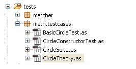
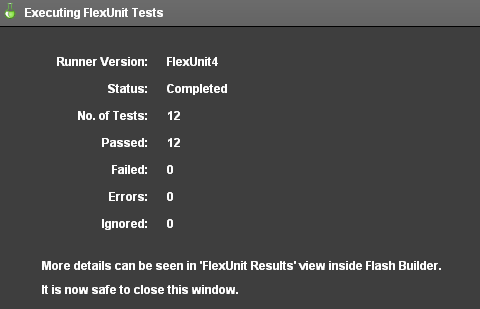
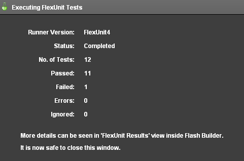
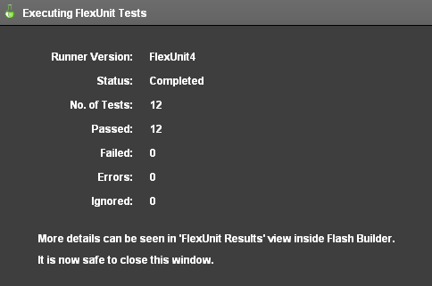

Unit 8 - FlexUnit Theories
 Download Unit Project Files
Download Unit Project FilesTheories are a tool for testing a class against a potentially infinite set of data points. While theories are a powerful concept, they must work in conjunction with static tests to ensure proper functionality.
Objectives:
After completing this lesson, you should be able to:
- Create theories
- Create theory data points
- Use assumptions in your theories
- Use complex objects with theories
- Use complex objects as data points
Topics
In this unit, you will learn about the following topics:
- Understand the use for data points
- Understanding triangulation of test cases
- Creating a theory
- Creating data points
- Understanding assumptions
- Understanding the theory success and failure model
- Using complex objects with theories
- Using the constructor of the TestCase
Understanding triangulation of test cases
When testing formulas, there are a potentially infinite number of values that may be given and return an expected result. It is impossible in these cases to test all possible values that could be passed to a test case.
Testing a single case is fairly weak, because any formula could return a hard-coded value. There is very little assurance in a single trial of anything. Likewise, a single test case is just slightly better than not testing at all.
If a test succeeds in two cases with two different values, already it has exponentially more assurance. If a test succeeds three or more times with three or more values, for each trial added it becomes substantially easier to trust the functionality being tested.
A small range of values is acceptable. Granted, it does not cover every case, but it does give you a substantial degree of assurance. A small range of values can also include all the types of values that could be problematic. For instance:
public function absoluteValue( value:int ):int {
if ( value < 0 ) {
return value * -1;
} else {
return value;
}
}
A simple method like the one presented above should be tested with at least five values: Positive integers, negative integers, 0, NaN, Infinity. That kind of small combination is fairly standard for arithmetic functions, but sometimes it becomes more complicated, particularly when float types are involved in the calculation.
While you may not be able to test every case, the more potential values that can be passed through the method to more assurance you have that the method does indeed function directly. We call this concept triangulation.
Understanding Theories
A FlexUnit theory is a method marked with the [Theory] metadata. Unlike the test methods you have worked with so far, theory methods can have parameters. Theory methods will be called multiple times with different data points, however, much like a mathematical theory; they are either valid or invalid, there is no sometimes.
Any one case that fails disproves the whole theory. Therefore any one time the theory method is called when it fails marks the entire test as a failure.
A simple theory method:
[Theory]
public function testTheory( value1:Number, value2:Number ):void
Understanding the use case for data points
A test like the one in the previous section relies upon good data points to effectively triangulate. The tests you have used so far in this course have been statically coded and passed values to test for functionality. While that works for a small number of tests, it becomes increasingly more difficult to write and maintain as the number of tests and data points grow.
When attempting to triangulate a method, you need to be able to quickly create and add to a vast set of data points which will be provided to the test. In FlexUnit 4.x two special metadata tags named [DataPoint] and [DataPoints] can decorate data to indicate that it should be provided to the available tests as potential data points.
Creating data points
A data point is a single variable, or function that returns a value, which will be passed as an argument to a test for testing. A data point:
- Must be defined as static
- Can be coded statically or be the result of a static method call
For Instance:
[DataPoint]
public static var value1:int = 10;
Data points are an array of variables, or a function that returns an array, used as arguments to a theory. Data points allow you to quickly specify many values that will be passed to a single theory.
- In addition to being decorated with the
[DataPoints]metadata, must be decorated with[ArrayElementType("TYPE")]specifying the type of the array elements. - Must be static
- Can be coded statically or be the result of a static method call
For instance:
[DataPoints]
[ArrayElementType("String")]
public static var stringValues:Array = ["one","two","three" ];
The ArrayElementType metadata describes the type of data in the Array to the theories in this class.
Creating theories
Theories are written to test a small function or calculation over a potentially large set of data. Using theories with a range of data, you build assurance that the theory is actually performing the calculation as opposed to just returning the expected result.
Some notes on theories:
- They are decorated with the
[Theory]metadata - They can take parameters
- Accepts parameters marked with
[DataPoint]and[DataPoints]metadata - They run with a special Theory runner
[RunWith("org.flexunit.experimental.theories.Theories")]
public class MyTheoryTest {
}
Theories run with all matching data points. If any combination of Datapoints fail, the theory fails.
[DataPoints]
[ArrayElementType("Number")]
public static var radii:Array = [ 1, 2, 3, 4 ];
[Theory]
public function testTheory( value1:Number, value2:Number ):void
This theory takes two parameters. All Datapoints referenced with the data type integer will be passed into each of these values for every possible combination.
Test process:
testTheory( 1, 1 )
testTheory( 1, 2 )
testTheory( 1, 3 )
...
testTheory( 4, 3 )
testTheory( 4, 4 )
Discussion on data typing and conversion
Marking data points with the [ArrayElementType("Type")] metadata ensures that only the desired input type is contained within the collection. Additionally, it makes sure that these values are passed in wherever a parameter of the specified type is used in a theory.
The following theory takes two number inputs and a string, but there is only a single collection of numbers and a single collection of strings within the class.
[DataPoints]
[ArrayElementType("Number")]
public static var numbers:Array = [ 1, 2, 3, 4, 5 ];
[DataPoints]
[ArrayElementType("String")]
public static var strings:Array = [ "Mike", "Tom", "Bob", "Cindy" ];
[Theory]
public function testNamesAndNumbers( name:String, numberOne:Number, numberTwo:Number ):void {
assertTrue( name.length > 0 );
assertTrue( numberOne > 0 );
assertTrue( numberTwo > 0 );
assertTrue( numberOne + numberTwo > 0 );
assertTrue( numberOne + numberTwo + name.length > 0 );
}
Numbers from the number array are used in the numberOne and numberTwo parameters, and the array of strings is used for the name parameter. The theory runs with all possible input combinations.
testNamesAndNumbers( "Mike", 1, 1 )
testNamesAndNumbers( "Mike", 1, 2 )
testNamesAndNumbers( "Mike", 1, 3 )
...
testNamesAndNumbers( "Cindy", 5, 4 )
testNamesAndNumbers( "Cindy", 5, 5 )
Walkthrough 1: Creating a Circle Theory
In this walkthrough you will perform the following tasks:
- Create a new theory case for the Circle class.
- Create a new theory to test Circle radii.
- Create an array of parameterized data.
- Add the CircleTheory case to the CircleSuite.
Steps
-
Select the math.testcases package from the previous exercise. Create a new class in the math.testcases package named CircleTheory.as. This class has no superclass or interfaces.
Alternatively, if you didn't complete the previous lesson or your code is not functioning properly, you can import the FlexUnit4Training_wt1.fxp project from the Unit 8/Start folder. Please refer to Unit 2: Walkthrough 1 for instructions on importing a Flash Builder project.
Create the CircleTheory classAfter the class has been created, the package directory should appear as follows:
Figure 1: Package directory structure
-
Mark the new class with
[RunWith("org.flexunit.experimental.theories.Theories")]metadata, which should be placed just above the class definition.[RunWith("org.flexunit.experimental.theories.Theories")] public class CircleTheory { ... }
Creating theories -
Create a new public function named
shouldShowAllRadiiEqual()with a parameter namedradiusof data typeNumber. Mark the function with[Theory]metadata:[Theory] public function shouldShowAllRadiiEqual( radius:Number ):void { } -
Add a variable named
circleof typeCircleto theshouldShowAllRadiiEqual()method. Instantiate circle with an origin at(0, 0)and theradiusparameter passed in as its radius.[Theory] public function shouldShowAllRadiiEqual( radius:Number ):void { var circle:Circle = new Circle( new Point( 0, 0 ), radius ); }If you did not use code-completion, add the imports for net.digitalprimates.math.Circle and flash.geom.Point at this time.
-
Add a call to the
assertEquals()method. Assert that thecircle.radiusis equal to theradiusparameter.[Theory] public function shouldShowAllRadiiEqual( radius:Number ):void { var circle:Circle = new Circle( new Point( 0, 0 ), radius ); assertEquals( radius, circle.radius ); }If you did not use code-completion, add an import for org.flexunit.asserts.assertEquals at this time.
-
Add a public static array to the class. Fill it with a variety of positive integer values. Here is an example:
public static var radii:Array = [ 1,2,3,4,5,6,7,8,9,10 ]; -
Mark the array with two lines of metadata,
[DataPoints]and[ArrayElementType("Number")].[DataPoints] [ArrayElementType("Number")] public static var radii:Array = [ 1,2,3,4,5,6,7,8,9,10 ]; -
Save CircleTheory.as.
Adding theories to your test suite -
Open the CircleSuite.as file within the math.testcases package. Add a new public variable named
test3with a type ofCircleTheory.[Suite] [RunWith("org.flexunit.runners.Suite")] public class CircleSuite { public var test1:BasicCircleTest; public var test2:CircleConstructorTest; public var test3:CircleTheory; }If you did not use code-completion, add the import for math.testcases.CircleTheory at this time.
-
Save the CircleSuite.as file.
-
Run the FlexUnit4Training.mxml file.
If FlexUnit4Training.mxml ran successfully you should see the following output in your browser window:
Figure 2: FlexUnit tests passed
Understanding Assumptions
Assumptions are used in conjunction with theories to limit acceptable data points. Assumptions allow theories to setup basic constraints and limitations for the methods and formulae being tested.
Some notes on assumptions:
- Assumptions use Hamcrest matchers
- If an assumption fails, the theory will advance to the next set of data points
- If no
Datapointsets pass the assumptions the test is marked as a failure - Assumptions still require an assert or expectation that tests the result
- For instance
assumeThat( value, greaterThan(0) );
If the parameter is greater than 0, the assumption passes and the test moves onto its next line. If the parameter value is not greater than 0 the assumption fails and the runner will move on to the next data point without running any other lines of this test. Even though the assumption fails for values under 0, the test does not fail or throw an error, because those data points have been essentially marked as invalid for the test theory.
Walkthrough 2: Adding an assumption
In this walkthrough you will perform the following tasks:
- Add invalid data to theory parameters.
- Create an assumption that handles invalid data.
Steps
-
Open the CircleTheory.as file from the previous exercise.
Alternatively, if you didn't complete the previous lesson or your code is not functioning properly, you can import the FlexUnit4Training_wt2.fxp project from the Unit8/Start folder. Please refer to Unit 2: Walkthrough 1 for instructions on importing a Flash Builder project.
Adding invalid values to your data points -
Add a single negative value to the beginning of the class's radii array. Here is an example:
public static var radii:Array = [ -5,1,2,3,4,5,6,7,8,9,10 ]; -
Run the FlexUnit4Training.mxml file.
If FlexUnit4Training.mxml ran successfully you should see the following output in your browser window:
Figure 1: A single test failure
The theory failed because -5 is an invalid radius for a Circle object. If one of the theories assertions fails, the entire theory fails.
Adding an assumption -
Add a new line to the
shouldShowAllRadiiEqual()method. On the line, add an assumption indicating that this test only works for positive radii. The method should read as follows:[Theory] public function shouldShowAllRadiiEqual( radius:Number ):void { assumeThat( radius, greaterThan( 0 ) ); var circle:Circle = new Circle( new Point( 0, 0 ), radius ); assertEquals( radius, circle.radius ); }If you did not use code-completion, add the import statements for org.flexunit.assumeThat and org.hamcrest.number.greaterThan at this time.
-
Save the CircleTheory.as file.
-
Run the FlexUnit4Training.mxml file.
If FlexUnit4Training.mxml ran successfully you should see the following output in your browser window:
Figure 2: FlexUnit tests passed
The
assumeThat( radius, greaterThan( 0 ) )statement assures that the theory is only testing radii that are valid, or in this case, positive. The theory ignores the -5 input and all negative inputs thanks to this statement.
Using complex objects with theories
FlexUnit 4 theories include support for complex objects as data points. Because ActionScript uses so many complex objects, it's not uncommon to have them passed as arguments in tests and theories. Theories are much more useful given the ability to deal with complex data points.
Some notes on complex data points:
- To use a complex object as data, simply specify it as the
ArrayElementTypein theDataPoints - The
ArrayElementTyperequires the full class path for the type, such asflash.geom.Pointormx.collections.ArrayCollection.
For Instance:
[DataPoints]
[ArrayElementType("flash.geom.Point")]
Public static var points:Array = [ new Point( 0, 0 ) ];
Using the constructor of the Theory Case
Theory case constructors can be used like the constructors of many classes. In test cases and theories, constructors can be passed initial data for use by all or some of the methods within the class. For instance:
public class TestCase {
[DataPoints]
[ArrayElementType("flash.geom.Point")]
public static var points:Array = [ new Point( 0, 0 ),
new Point( 10, 10 ),
new Point( -5, 5 ) ];
[DataPoints]
[ArrayElementType("Number")]
public static var radii:Array = [ 0, 5, 10 ];
public static var circle:Circle;
public function TestCase( origin:Point, radius:Number ):void {
circle = new Circle( origin, radius );
}
...
}
This method can help to reduce the complexity of the created complex objects, or it can serve to convert existing sets of data points into use within other complex objects.
If the complex objects are passed to the class constructor, they no longer need to be passed in as arguments to the theories. The constructor will be run before each test or theory in the case. Each test method can then use the newly instantiated class variables, which will be re-instantiated before each test is run.
In this way, the class tends to be more cohesive and about a specific set of data rather than a free for all of unrelated theories working on data points.
Walkthrough 3: Using Complex Objects as DataPoints
In this walkthrough you will perform the following tasks:
- Create a new theory for testing point distance.
- Pass Point objects into CircleTheory as DataPoints.
Steps
-
Open the CircleTheory.as file from the previous exercise.
Alternatively, if you didn't complete the previous lesson or your code is not functioning properly, you can import the FlexUnit4Training_wt3.fxp project from the Unit8/Start folder. Please refer to Unit 2: Walkthrough 1 for instructions on importing a Flash Builder project.
Create a method for testing points on the circle -
Add a private static constant named
TOLERANCEof data typeNumberto the CircleTheory class.private static const TOLERANCE:Number = .0001; -
Add a new method named
shouldShowAllPointsEqual()to the class.[Theory] public function shouldShowAllPointsEqual(origin:Point):void { } -
Create a new circle with the function's origin argument and a radius of 10.
[Theory] public function shouldShowAllPointsEqual(origin:Point):void { var circle:Circle = new Circle(origin, 10); } -
Call the
circle.getPointOnCircle()method with argumentMath.PI.[Theory] public function shouldShowAllPointsEqual( origin:Point ):void { var circle:Circle = new Circle( origin, 10 ); var pointOnCircle:Point = circle.getPointOnCircle( Math.PI ); } -
Declare a variable named
distanceof data typeNumberwithin theshouldShowAllPointsEqual()method. Instantiate it toPoint.distance( origin, pointOnCircle ).[Theory] public function shouldShowAllPointsEqual( origin:Point ):void { var circle:Circle = new Circle( origin, 10 ); var pointOnCircle:Point = circle.getPointOnCircle( Math.PI ); var distance:Number = Point.distance( origin, pointOnCircle ); } -
Add a call to the
assertThat()method. It should assert thatdistancevariable iscloseTo( circle.radius, TOLERANCE ).[Theory] public function shouldShowAllPointsEqual( origin:Point ):void { var circle:Circle = new Circle( origin, 10 ); var pointOnCircle:Point = circle.getPointOnCircle( Math.PI ); var distance:Number = Point.distance( origin, pointOnCircle ); assertThat( distance, closeTo( circle.radius, TOLERANCE ) ); }If you did not use code-completion, add the imports for org.flexunit.assertThat and org.hamcrest.number.closeTo at this time.
-
Add a new public static array named
pointsto the class. Initialize the array with six point values, representing a gamut of potential points.public static var points:Array = [ new Point( 0, 0 ), new Point( 10, 10 ), new Point( -5, 5 ), new Point( 20, -20 ), new Point( -17, -16 ), new Point( 5.2, -11.3 ) ]; -
Mark the array with
[DataPoints]and[ArrayElementType("flash.geom.Point")]metadata. Place these tags on the two lines above the array:[DataPoints] [ArrayElementType("flash.geom.Point")] public static var points:Array = [ new Point( 0, 0 ), new Point( 10, 10 ), new Point( -5, 5 ), new Point( 20, -20 ), new Point( -17, -16 ), new Point( 5.2, -11.3 ) ]; -
Save CircleTheory.as
-
Run the FlexUnit4Training.mxml file.
If FlexUnit4Training.mxml ran successfully you should see the following output in your browser window:

Figure 1: FlexUnit tests passed
Adding multiple parameters to a theory -
Alter the
shouldShowAllPointsEqual()method to accept a second parameter namedradiusof data typeNumber. Theradiusparameter will be passed to the circle constructor. You will need to add anassumeThat( radius, greaterThan(0) );statement to the first line of theshouldShowAllPointsEqual()method.[Theory] public function shouldShowAllPointsEqual( origin:Point, radius:Number ):void { assumeThat( radius, greaterThan( 0 ) ); var circle:Circle = new Circle( origin, radius ); var pointOnCircle:Point = circle.getPointOnCircle( Math.PI ); var distance:Number = Point.distance( origin, pointOnCircle ); assertThat( distance, closeTo( circle.radius, TOLERANCE ) ); } -
Save CircleTheory.as
-
Run the FlexUnit4Training.mxml file.
If FlexUnit4Training.mxml ran successfully you should see the following output in your browser window:
Figure 2: FlexUnit tests passed
Because the
shouldShowAllRadiiEqual()theory passes by constructing valid Circle objects with radius parameters from the radii array, it should be no surprise that theshouldShowAllPointsEqual()method passes using those data points.Valid data points should be consistent for all theories.
Add a radians parameter to the test method -
Re-Open to the CircleTheory.as file.
-
Add a parameter to the
shouldShowAllPointsEqual()method namedradiansof data typeNumber. Alter thecircle.getPointOnCircle()method so that it takesradiansas its arguments.[Theory] public function shouldShowAllPointsEqual( origin:Point, radius:Number, radians:Number ):void { assumeThat( radius, greaterThan( 0 ) ); var circle:Circle = new Circle( origin, radius ); var pointOnCircle:Point = circle.getPointOnCircle( radians ); var distance:Number = Point.distance( origin, pointOnCircle ); assertThat( distance, closeTo( circle.radius, TOLERANCE ) ); } -
Save CircleTheory.as
-
Run the FlexUnit4Training.mxml file.
-
If FlexUnit4Training.mxml ran successfully you should see the following output in your browser window:
Figure 3: FlexUnit tests passed
The
circle.getPointOnCircle()method should return a valid point on the circle regardless of the value of the radians field. Any number within the radii array should be a valid radians argument, and therefore the theory passes with these data points.
Summary
Data points and theories allow many values to be tested without a great deal of complexity.
Metadata:
Theory classes are marked with
[RunWith("org.flexunit.experimental.theories.Theories")]metadata.Single data points are marked with
[DataPoint]metadata.Arrays of data points are marked with
[DataPoints]and[ArrayElementType("TYPE")]metadata.Theories are marked with
[Theory]metadata.Theories can create a test fixture using the class constructor.
Complex objects can be passed as data points.